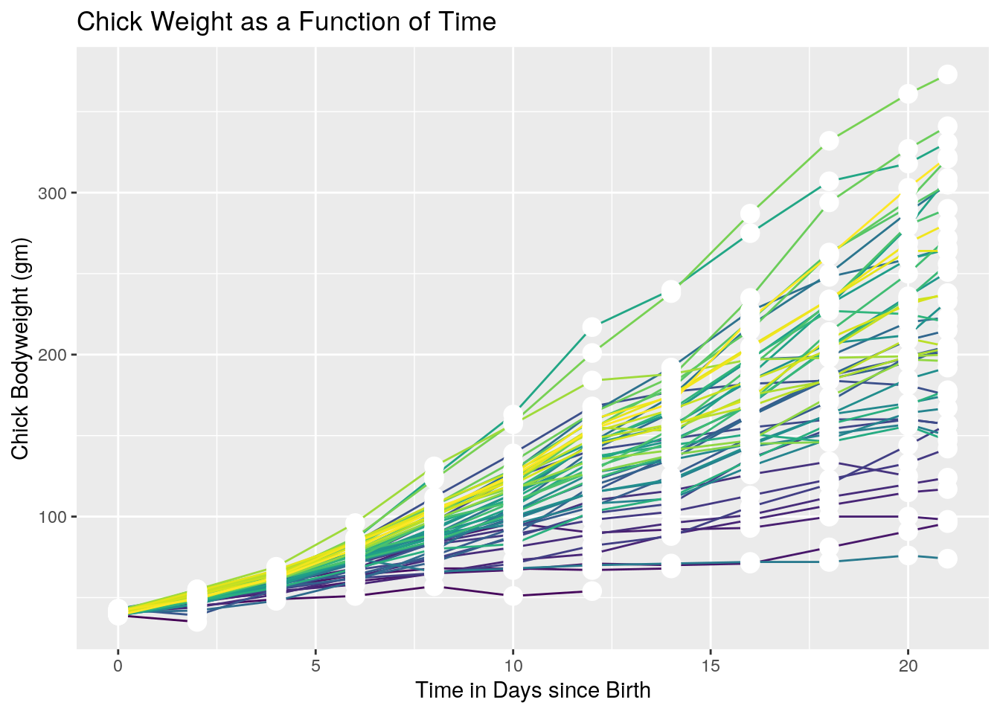

December 2, 2020
Rise of the Machines
I do not consider myself the most computer literate. I mean this in all sincerity. That does not mean I don't know my way around computers - all this means is that the harder nuts and bolts about computers usually flies right over my head. Introductory biostats was difficult because of its usage of R, but as I progressed in my courses I realized very quickly that the modern day Biology student, much like many other professions, was going to have to come to terms with the machine.
Ramaissance Man
One of my least favorite things about college was meeting people who forgot to have interests outside of their majors. You would struggle to hear about an engineer's favorite book or an art majors favorite car. Chemistry students couldn't be pressed about different philosphers, and forget about asking a music student what their favorite constellation was.
Say what you will about high school classes and core courses, but they're done with the hope to expose you to a wide range of interests and to make you a well rounded student (whether or not they achieve this goal is a different story).
For a myriad of reasons, some students become highly specialized in college and tend not to venture far out of their area of study. I've had a different experience - I never became obsessed with my coursework to the point of ignoring the other parts of me. I've expanded my areas of interest and haven't stuck exclusively to one thing. I'm a biology major, but I picked up a teaching certificate with future plans to influence education. My short term goals include going to lawschool and enlisting in the Army Reserves. I'm a professional musician who was taken music major level courses all throughout college, but I've also read more philosophy than I'd like to admit. I took a concious effort to not pigeonhole myself; and while this did help me in certain situation, this did hinder me in others. One of the areas that I have found a way to almost completely avoid has been fixing my computer literacy.
Welcome to hell ... I MEAN R
R isn't that bad. As far as a first program to get use to coding goes, this is by far one of the better ones I could have started off with. There is some really cool stuff you can do in R, as demonstrated here below.
ChickWeight <- as.data.frame(ChickWeight)
library(ggplot2)
ggplot(ChickWeight, aes(x = Time, y = weight, color = Chick)) +
geom_line(aes(group=Chick)) +
geom_point(size = 4, color = "white") +
theme(legend.position = "none") +
ggtitle("Chick Weight as a Function of Time") +
xlab("Time in Days since Birth") + ylab("Chick Bodyweight (gm)")
r <- ggplot(ChickWeight, aes(x = Time, y = weight, color = Chick)) +
geom_line(aes(group=Chick)) +
geom_point(size = 4, color = "white") +
theme(legend.position = "none") +
ggtitle("Chick Weight as a Function of Time") +
xlab("Time in Days since Birth") + ylab("Chick Bodyweight (gm)")R can take data and present beautiful looking graphs such as this one that intricately displays all of the variables that are being measured. Here we see a graph of how chick weights differ over time between different groups of chicks. This just starts to scratch the surface, but it really shows how powerful R can be. For further examples of R being used to visualize data, please go to the "Projects" page of my site.
So while I spent many a night banging my head against my keyboard trying to figure out why I kept getting error messages, my (now 2 courses) dedicated towards better understanding of this program had been extremely rewarding and had given me the confidence to try out programming and coding in other languages. And then ...
A New Challenger Appears
Python is hard to pick up. Much like learning a spoken language for the first time, everything feels familiar yet alien simultaneously. While we were learning Python in class, everything we did felt familiar yet strange. It was almost as if I woke up in a different dimension and everything was slightly changed, but I wasn't able to put my finger on what exactly was different. This is what coding in Python after using R for the majority of your college carreer looked like.
A Snakey Snake
"If I struggled with doing certain functions in R, there was no way I was going to learn an entirely new program by the end of the semester," I had thought early on to myself. However, much like my knowledge with R, I can comfortably say I have a working knowledge of Python. I'm not an expert, but I can say I have a surface level understanding of this snake. (It's still odd starting from the 0 position in Python as oppossed to 1 when indexing.)
In order to do certain functions that are similar to those in R, additional packages may need to be downloaded. For example, in R, the in order to determine the number of observations and variables (rows and columns), we would do the following.
quakes <- quakes
dim(quakes)## [1] 1000 5This presents us with 1000 observations and 5 variables. We saved our dataset as an object and then used the dim function to get the dimensions of our object. To get the same information using python, we would do the following.
r.quakes.shape
## (1000, 5)This is a similar process, but first we made distinct that we would be using the quakes dataset from R. Then we used the shape function to get the same number of observations and variables as we did through R. In this case, the numpy and panda packages were imported and used.
Python can also be used to create strings, which become more useful once applied towards things like regular expressions, along with dictionaries, which are unordered collections of items, with each item containing a key/value pair.
#strings
first = "Patrick"
last = "Molina"
first + last
#dictionary## 'PatrickMolina'my_dict = dict({1:'banana', 2:'cartoon'})Working in Harmony
Python and R can be used seperately to get towards the same answer, but what about using them together?
Reticulate is a package that allows you to use Python and R together. This works best when working locally instead of through a server. For example, an item can be defined in R, then defined again in Python to print out a combined item.
harmony <- "R and Python"harmony = "working together"
print(r.harmony,harmony)## R and Python working togetherThis is pretty cool! This also only serves as an introduction to the cool stuff you can do when using both of these programs in tandem. Like I said, while not being the most computer savy, my most recent coursework involving R and Python has absolutely sparked an interest in overcoming such a blankspot in my knowledge.